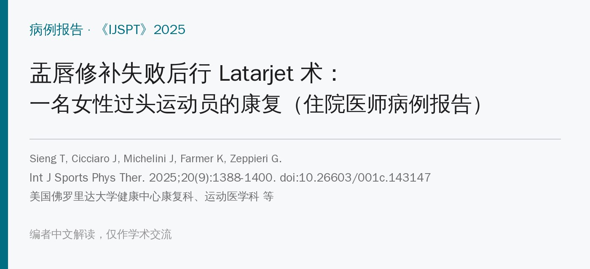
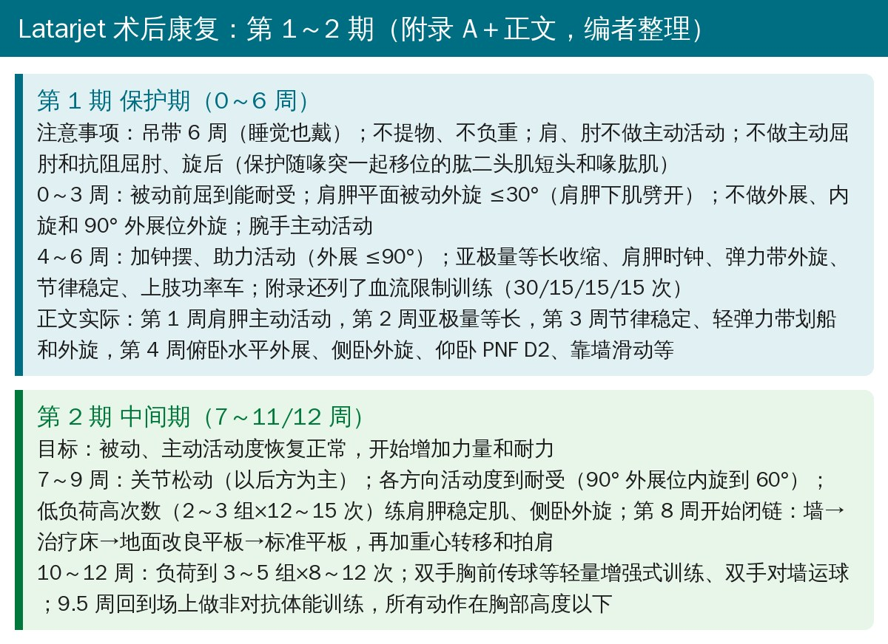
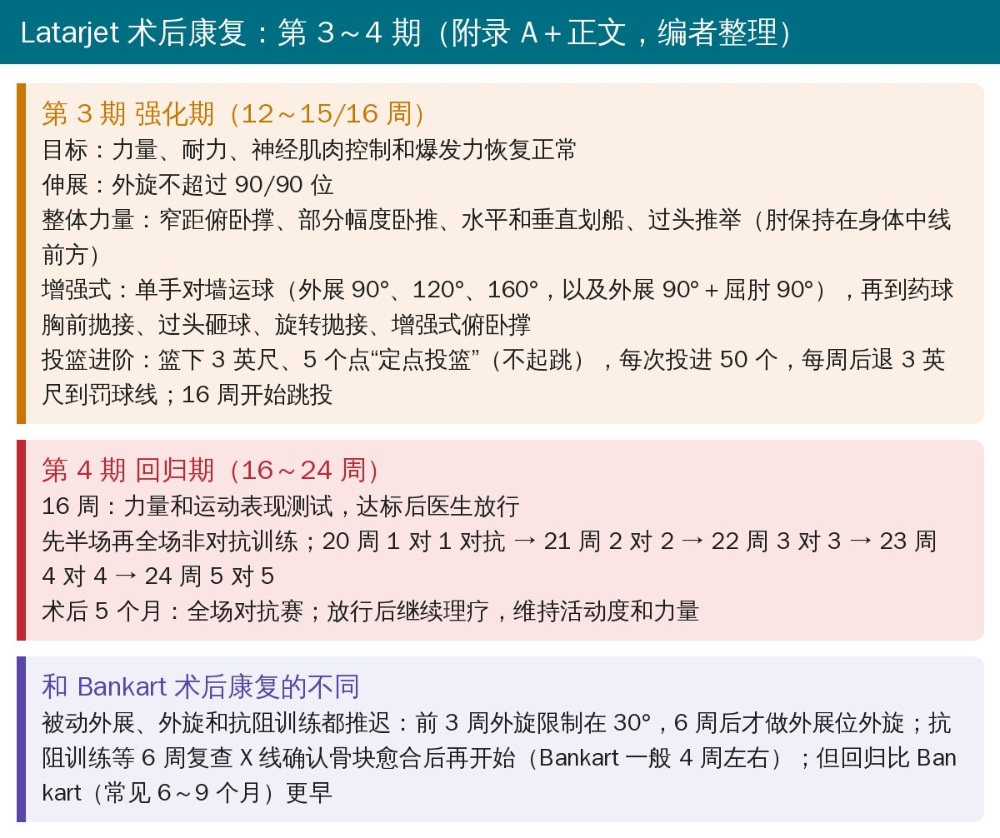
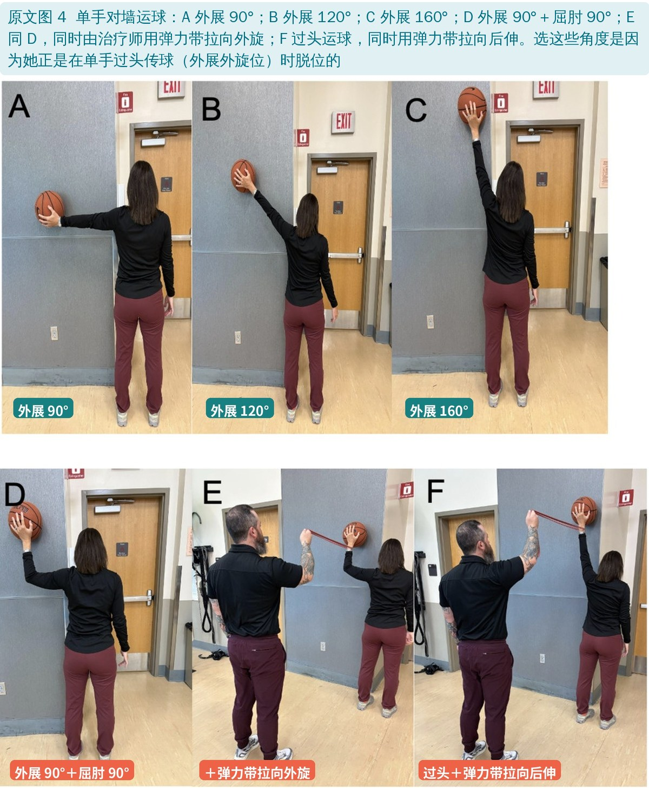
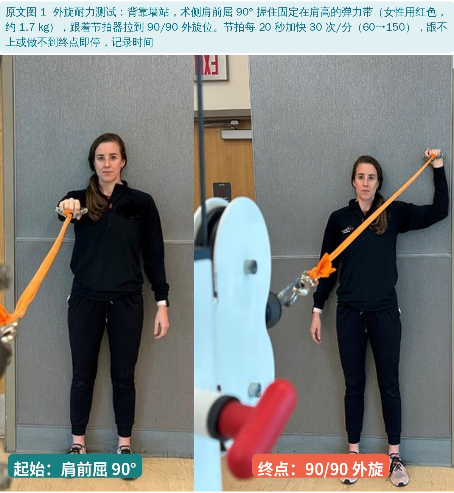
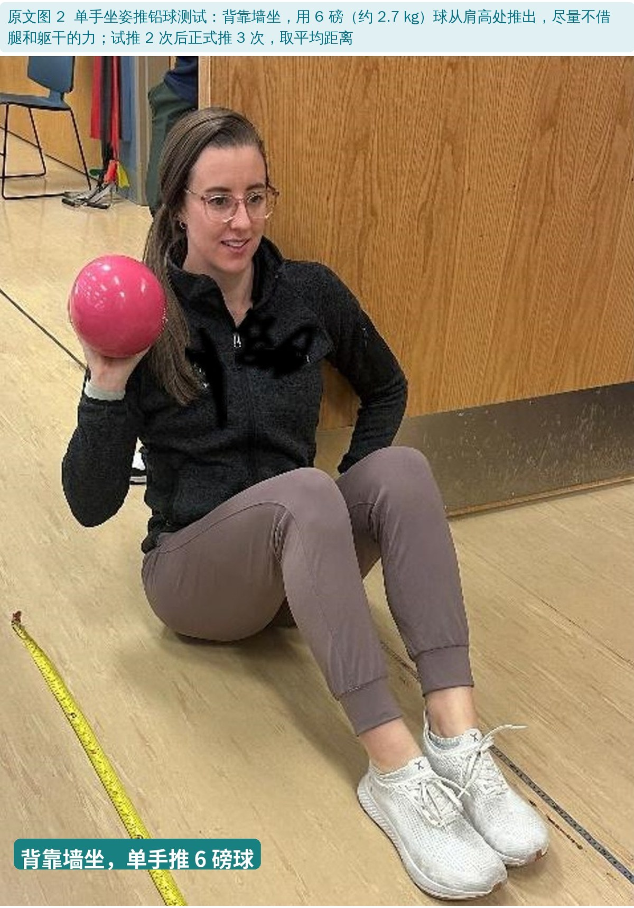
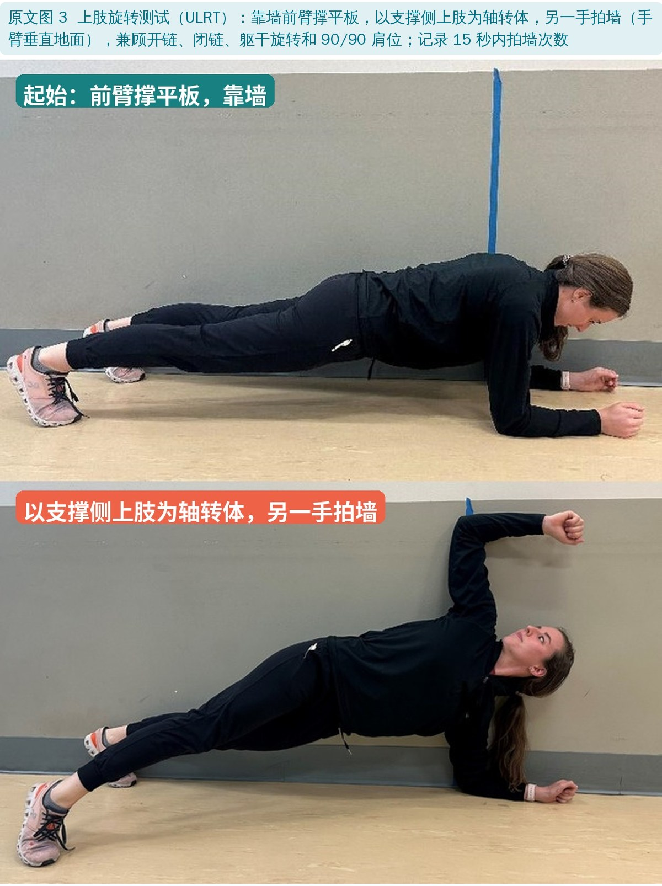
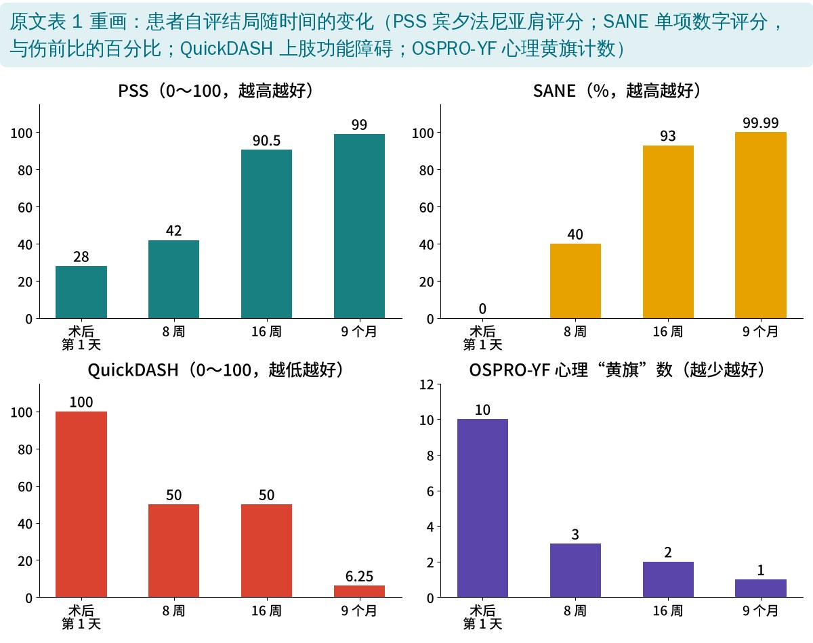

🔖原文信息（编者中文重排）
📚 文献信息
▪ Sieng T, Cicciaro J, Michelini J, Farmer K, Zeppieri G. Rehabilitation Following a Latarjet After a Failed Labral Repair in a Female Overhead Athlete: A Resident's Case Report. International Journal of Sports Physical Therapy. 2025;20(9):1388-1400. doi:10.26603/001c.143147
▪ 作者单位：美国佛罗里达大学健康中心康复科和运动医学科、佛罗里达大学运动协会、约翰斯·霍普金斯全儿童医院、范德堡大学医疗中心
▪ 文章类型：病例报告（证据等级 5 级），佛罗里达大学运动物理治疗住院医师项目的结业病例；附录 A 为完整康复方案
创伤性肩关节前脱位在年轻运动员中很常见，而且容易复发：原文引用的数据是首次脱位时 20 岁以下的复发率约 90%，20～30 岁约 70%～82%。关节镜下 Bankart 修补是美国最常用的手术，但术后复发率报告在 6%～50%。
Latarjet 术把喙突连同附着的联合腱一起移到关节盂前方，用螺钉固定：既补了骨，又让联合腱在外展外旋位像“吊带”一样兜住肱骨头。术后复发率仅 3%～15%，特别适合关节盂骨缺损 >20%、对抗或竞技运动、韧带松弛的患者，但并发症比 Bankart 多。
现有 Latarjet 回归运动的研究大多是男性（一项纳入 2134 例的综述中 86.9% 是男性），女性的喙突和关节盂解剖又和男性不同。作者想用一个病例展示女性过头运动员 Latarjet 术后怎么一步步康复、怎么判断能回场。
• 患者：23 岁女性，右利手，美国大学一级联赛（NCAA D1）女篮控球后卫
• 病史：大学 4 年里投篮手（右肩）脱位或半脱位 5 次以上；先保守治疗 6 周无效，做了关节镜前方盂唇修补（Bankart），术后 8 个月回场
• 修补失败：回场后练球时单手过头传球（外展外旋位）再次脱位，之后又在床上躺着时脱位一次
• 磁共振：前方盂唇撕裂、骨性 Bankart（约 10% 骨缺损）、Hill-Sachs 损伤 24×15×5 mm
• 手术：赛季临近、想在 WNBA 选秀前多打比赛，评估喙突大小形态合适后，做了开放 Latarjet 术：沙滩椅位，在肩胛下肌下 1/3 处劈开，取出原来的锚钉，喙突骨块与关节面平齐，2 枚螺钉固定，再修补关节囊
• 术后第 1 天评估：疼痛 8/10；被动前屈 90°、外旋 20°～30°；患者自评残疾和心理负担都很重；目标是 5 个月后赛季开始时无限制回场
术后由骨科医生和康复团队先商量好方案，按组织愈合时间和个人进展推进；每周 2 次理疗加家庭训练。Latarjet 早期要保护喙突骨块的愈合和劈开的肩胛下肌，同时逐步恢复活动度。

🔖第 1～2 期（编者根据附录 A 和正文整理）

🔖第 3～4 期（编者根据附录 A 和正文整理）
• 保护肱二头肌：喙突上附着肱二头肌短头和喙肱肌，早期不做主动和抗阻屈肘、旋后，避免牵拉骨块
• 外旋分阶段：肩胛下肌劈开，前 3 周肩胛平面外旋 ≤30°，之后才逐步放开；伸展外旋不超过 90/90 位
• 抗阻训练等 X 线：6 周复查确认骨块愈合后才开始抗阻（Bankart 一般 4 周左右）
• 闭链四步走：墙 → 治疗床 → 地面改良平板 → 标准平板，做到没有代偿、不痛，再从墙开始加重心转移和拍肩
• 按受伤机制练：她是在外展外旋位过头传球时脱位的，所以单手对墙运球专门练 90°、120°、160° 外展和 90/90 位，并用弹力带加外旋、后伸干扰
• 投篮进阶量化：篮下 3 英尺 5 个点、不起跳，每次投进 50 个，每周后退 3 英尺；16 周才开始跳投
• 对抗分级：20 周 1 对 1，之后每周加 1 人，24 周 5 对 5

🔖原文图 4：不同肩位的单手对墙运球
16 周做了一组力量和运动表现测试，作为回场依据；9 个月（赛季后）复测。

🔖原文图 1：外旋耐力测试

🔖原文图 2：单手坐姿推铅球测试

🔖原文图 3：上肢旋转测试（ULRT）
| 指标 | 作者设定的目标 | 16 周 | 9 个月 |
|---|---|---|---|
| 外旋力量 LSI | 95%～100% | 106.8% | 110.4% |
| 内旋力量 LSI | 100%～110% | 94.1% | 94.2% |
| 外旋/内旋比 | 72%～76% | 83.5% | 78.5% |
| 外旋力矩/体重 | 18%～23% | 10.5% | 12.6% |
| 内旋力矩/体重 | 26%～32% | 12.6% | 16% |
| 外旋耐力（秒） | LSI > 90% | 术侧 77 / 健侧 51 | 术侧 73 / 健侧 58 |
| ULRT（15 秒次数） | LSI > 90% | 术侧 9.67 / 健侧 8.67 | 术侧 15 / 健侧 12.33 |
| 坐姿推铅球（cm） | LSI > 90% | 术侧 416.3 / 健侧 426.3 | 术侧 520.7 / 健侧 493.3 |
原文表 3 和正文中的目标值（中文整理）。等速测试为 60°/s；LSI＝术侧/健侧；红字为编者标出的未达到作者自己设定目标的数值
• 16 周内共做了 30 次理疗；16 周通过测试、获医生放行，术后 5 个月打全场对抗赛，回到原来的水平
• 活动度：前屈 90° → 167°；体侧外旋 20° → 70°；90° 外展位外旋 85°、内旋 60°（16 周）
• 患者自评：宾夕法尼亚肩评分 28 → 99；QuickDASH 100 → 6.25；SANE 0% → 约 100%；心理黄旗 10 个 → 1 个，全部超过最小临床重要差异
• 复查 CT 和 X 线：骨块骨化愈合，没有异常

🔖患者自评结局（编者根据原文表 1 重画）
• 只有 1 个人：病例报告只能说明“这样做，这个人恢复得不错”，不能证明这套方案比别的好
• “全部达标”名不副实：作者说 16 周时满足了所有力量和表现标准，但按他们自己引用的目标，内旋 LSI、外旋/内旋比、力矩体重比都没达标，力矩体重比只有目标的一半左右；真正都达到的只有“LSI > 90%”这一条
• 随访短：引言说要评估“长期结局”，实际只随访到 9 个月，没有报告之后有没有再脱位
• 数据有不少错漏（见下文），读的时候要以原始数据为准
• 优点：方案写得很细，有附录、有时间点、有量化的投篮和对抗进阶；回场测试兼顾力量、耐力、爆发力、闭链稳定和心理；按受伤机制设计训练
• 表 3 的“百分比变化”算错了：推铅球术侧 416.33 → 520.67 cm 是 +25.1%（原文写 +79.9%），健侧 426.3 → 493.33 cm 是 +15.7%（原文 +86.4%）；ULRT 术侧 9.67 → 15 是 +55.1%（原文 +64.5%），健侧 8.67 → 12.33 是 +42.2%（原文 +70.3%）；外旋耐力健侧 51 → 58 秒是 +13.7%（原文 +12.1%）
• “术侧全面优于健侧”不对：正文说术侧在力量、耐力、闭链稳定上都超过健侧，只有推铅球差 2.3%；但内旋力量 LSI 只有 94.1%
• 患者自评的变化量前后不一：同一段先说 PSS、QuickDASH、SANE 分别“改善 62.5%、50%、93%”，后面又说“PSS 增加 58 分、QuickDASH 下降 43.75 分、SANE 增加 52.9%”。按表 1，PSS 从 28 到出院 90.5（+62.5 分）或 9 个月 99（+71 分），都不是 58；43.75 是 16 周到 9 个月的下降，不是从基线算起；SANE 的最小临床重要差异前面写 15%，后面写 18%
• QuickDASH 8 周和 16 周都是 50：16 周时她已获准回场、PSS 90.5、SANE 93%，QuickDASH 仍为 50（中度残疾）显得不太合理
• 初次外旋角度：检查部分写肩胛平面被动外旋 30°，结局部分和表 2 写体侧外旋 20°
• 回场时间三种说法：摘要写术后 5 个月回到全面参赛；结论写 16 周回场；第 4 期写到 24 周才 5 对 5
• 正文与附录 A 不一致：分期写法不同（第 2 期正文 7～11 周、附录 7～12 周）；第 4～6 周外旋正文写“到耐受”，附录仍限 30°；投篮附录从 10 周开始，正文在第 3 期（12 周后）；附录有血流限制训练，正文没提；正文说抗阻训练 6 周后才开始，附录 7～9 周才列抗阻
• 正文自相矛盾：同一段先说“开始做肘和腕的主动活动”，接着又说“禁止主动屈肘”
• 同一文献两组数字：引言说参考文献 5 的回归率 90.3%、同水平 80.6%，讨论又说同一篇是 94% 和 84%，并把“Bankart 失败、骨缺损 <20%”的研究对象也算在它头上（更像参考文献 2）
• 小错：许可写成“Creative Commons Attribution 4.0”却标 CC BY-NC 4.0；“preoperative imagining”“fin this case”“an basketball player”等笔误
• Latarjet 术后康复的核心：保护骨块（喙突上的肌肉不抗阻）和肩胛下肌（外旋分阶段放开），等 X 线确认愈合再抗阻
• 按受伤机制设计末段训练：过头运动员在什么位置脱位，就在什么位置练稳定和耐力（如外展外旋位运球、弹力带干扰）
• 回场测试要看全：只看 LSI 容易高估——这个病例 LSI 大多 >90%，但力矩体重比只有目标的一半；健侧也可能因为长期不练而偏弱
• 心理也要评：术后第 1 天 11 个心理维度里 10 个亮黄旗，随着功能恢复逐步下降，OSPRO-YF 简单可用
• 这是单个病例，方案可以参考，时间节点要按手术方式、骨块愈合和个人表现调整，并和手术医生保持沟通
欢迎关注骨科康复小黄公众号，获取更多物理治疗的专业知识！
📄参考文献：
Sieng T, Cicciaro J, Michelini J, Farmer K, Zeppieri G. Rehabilitation Following a Latarjet After a Failed Labral Repair in a Female Overhead Athlete: A Resident's Case Report. Int J Sports Phys Ther. 2025;20(9):1388-1400. doi:10.26603/001c.143147
原文以 CC BY-NC 4.0 协议开放获取，版权归原作者所有。本文为非商业的学术交流中文解读：原文图 1～4 引自原文，图中中文标注为编者所加；康复方案卡根据原文附录 A 和正文整理，结局图根据原文表 1 重画，表格为中文翻译。仅供学习交流，如有侵权请联系删除。